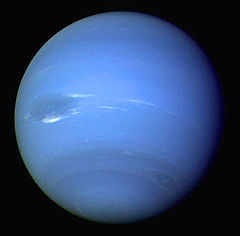

Pick the top drop down to filter by indvidual planet or select the second dropdown menu to filter the results by clasification list. You can see the names of the planets on each clasification list by filtering by clasification list and opening the planet list
Use the drop downs to filter the planets (TEST) |
|
View indvidual Planet information |
|
Please select which Planetary List you wish to view |
|
selected out of | Reset All
|
Our Solar System
I would be remiss, if I did not mention the planets that spurred on our efforts to find worlds arround stars other than our own. With in our tiny corner of the galaxy we currently hay 8 confirmed planets, 5 confirmed dwarf planets, 200 moons and more tham 150 million asteroids that are more than 100 meters long. It would be hard to include anything smaller than this as the number changes all the time due to minor collisions and smaller fragments breaking up all the time.
|
Mercury is the smallest and innermost planet in the Solar System. Its orbit around the Sun takes 87.97 days, the shortest of all the planets in the Solar System. It is named after the Roman deity Mercury, the messenger of the gods. The planet telescopically displays the complete range of phases, similar to Venus and the Moon, as it moves in its inner orbit relative to Earth, which recurs over its synodic period of approximately 116 days. |
|
 |
Venus is the second planet from the Sun. It is named after the Roman goddess of love and beauty. As the second-brightest natural object in the night sky after the Moon. Venus orbits the Sun every 224.7 Earth days. With a rotation period of 243 Earth days, it takes longer to rotate about its axis than any planet in the Solar System. Venus does not have any natural satellites, a distinction it shares only with Mercury among planets in the Solar System. |
| Earth is the third planet from the Sun and the only astronomical object known to harbor life. According to radiometric dating and other sources of evidence, Earth formed over 4.5 billion years ago. Earth's gravity interacts with other objects in space, especially the Sun and the Moon, which is Earth's only natural satellite. Earth orbits around the Sun in 365.256 days, a period known as an Earth sidereal year. During this time, Earth rotates about its axis about 366.256 times. | |
| Mars is the fourth planet from the Sun and the second-smallest planet in the Solar System after Mercury. In English, Mars carries a name of the Roman god of war and is often referred to as the 'Red Planet'. The latter refers to the effect of the iron oxide prevalent on Mars' surface, which gives it a reddish appearance distinctive among the astronomical bodies visible to the naked eye. Mars is a terrestrial planet with a thin atmosphere, having surface features reminiscent both of the impact craters of the Moon and the valleys, deserts, and polar ice caps of Earth. | |
| Jupiter is the fifth planet from the Sun and the largest in the Solar System. It is a gas giant with a mass one-thousandth that of the Sun, but two-and-a-half times that of all the other planets in the Solar System combined. Jupiter is one of the brightest objects visible to the naked eye in the night sky, and has been known to ancient civilizations since before recorded history. It is named after the Roman god Jupiter. When viewed from Earth, Jupiter can be bright enough for its reflected light to cast shadows. | |
 |
Saturn is the sixth planet from the Sun and the second-largest in the Solar System, after Jupiter. It is a gas giant with an average radius about nine times that of Earth. It has only one-eighth the average density of Earth; however, with its larger volume, Saturn is over 95 times more massive. Saturn is named after the Roman god of wealth and agriculture; its astronomical symbol (♄) represents the god's sickle. |
| Uranus (from the Latin name Ūranus for the Greek god Οὐρανός) is the seventh planet from the Sun. It has the third-largest planetary radius and fourth-largest planetary mass in the Solar System. Uranus is similar in composition to Neptune, and both have bulk chemical compositions which differ from that of the larger gas giants Jupiter and Saturn. For this reason, scientists often classify Uranus and Neptune as "ice giants" to distinguish them from the gas giants. | |
|  | Neptune is the eighth and farthest known planet from the Sun in the Solar System. Neptune is 17 times the mass of Earth, slightly more massive than its near-twin Uranus. Neptune is denser and physically smaller than Uranus because its greater mass causes more gravitational compression of its atmosphere. Neptune orbits the Sun once every 164.8 years at an average distance of 30.1 au (4.5 billion km; 2.8 billion mi). It is named after the Roman god of the sea and has the astronomical symbol ♆, a stylised version of the god Neptune's trident. |